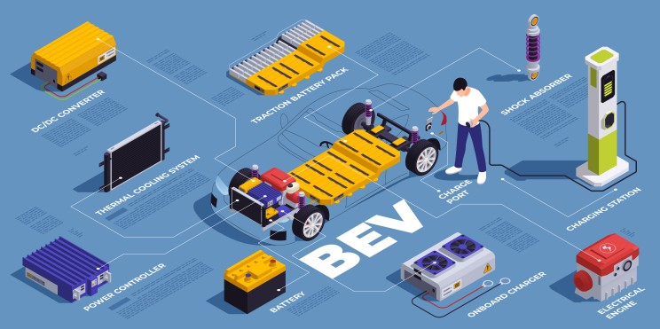

The electric vehicle (EV) revolution is gaining serious traction in India, but a crucial piece of the puzzle remains – localization of lithium-ion (Li-ion) cell manufacturing. As a leading provider of Li-ion battery assembly line solutions, I have been following the surge in public interest. One thing that I am noticing continuously is that a lot of players in the automotive segment have announced a big chunk of investment in lithium-ion cell production. Let’s spare this for same announcements.
Jobs and Growth Taken Seriously
Companies like Ola Electric , @, and Rajesh Exports Ltd are leading the charge. Ola Electric's upcoming plant in Bengaluru promises to create 5,000 jobs across various disciplines. Similarly, Reliance aims to generate 10,000 jobs through its giga factory project, with a focus on skilled labor in areas like cell manufacturing, automation, and quality control. These are just a few examples, and the overall impact on job creation is expected to be significant.
Benefits for Li-ion Battery Assembly Players
The rise of domestic cell production is a win-wi n situation for Li-ion battery assembly players. Those in the assembly domain would not be exposed to harsh tax policies and import hassles. They can offer expertise in designing and integrating domestically produced cells from companies like these into efficient assembly lines for leading EV manufacturers like Mahindra Group and TVS Motor Company . This not only strengthens the supply chain but also fosters a collaborative environment that benefits the entire EV ecosystem.
A Rising Tide Beyond the EV Industry
The ripple effects of domestic Li-ion cell production extend far beyond the EV industry. Companies dealing in raw materials like Gujarat Mineral Development Corporation (GMDC), which recently announced plans to mine lithium in India, will experience a significant boost in demand. Additionally, the need for robust safety regulations and recycling infrastructure will create opportunities for environmental consultancies and waste management companies like Evoke Electric, a leader in EV battery recycling solutions.

Multiple States With the Same Vision
Adding to the excitement, Ather Energy gy, a prominent electric two-wheeler manufacturer, recently announced its plans to set up a new manufacturing plant in Maharashtra's Aurangabad district. This marks Ather's first venture outside of Tamil Nadu and signifies the growing confidence in domestic Li-ion cell production. Their new facility, expected to be operational soon, will not only manufacture Ather's electric scooters (like the Ather 450X) but also produce Li-ion battery packs, creating a more vertically integrated operation. This strategic move by Ather is expected to generate around 4,000 jobs and further bolster the EV ecosystem in Maharashtra.
The Future is in the Collaboration
While India takes a giant leap towards self-sufficiency in Li-ion cell production, collaboration between established players and new entrants is paramount. At Semco, we are committed to working with both the old players who are seen as market giants and those who call themselves a startup.
This era of domestic Li-ion cell production presents a golden opportunity for India to not only be a major EV player but also a leader in clean energy solutions. By embracing innovation and fostering collaboration, we can collectively usher in a greener future for the nation.